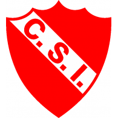
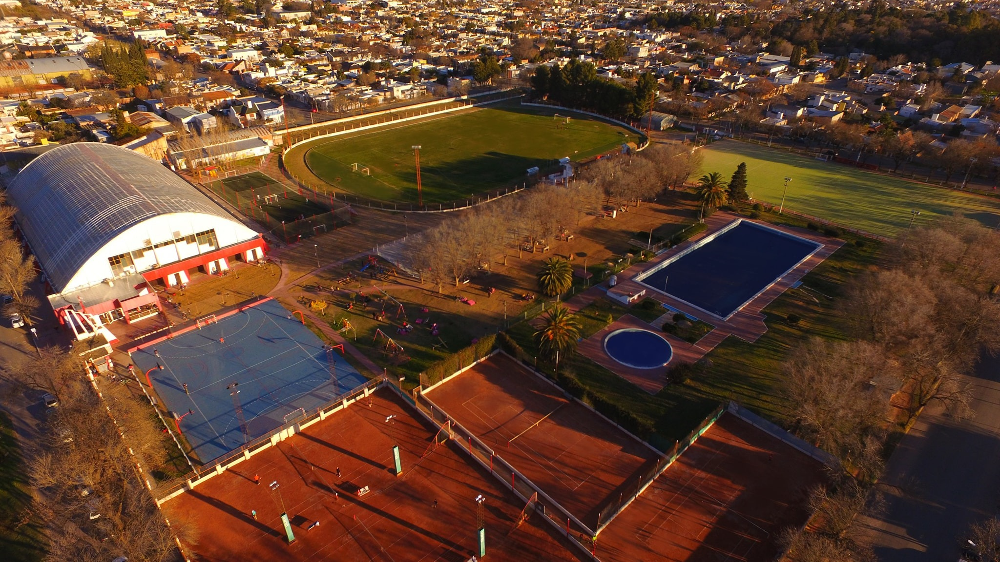

|

|
Club Sportivo Independiente
|
Historia de Sportivo Independiente

Sportivo Independiente es uno de los clubes más antiguos y prestigiosos de General Pico. Fundado en 1928, ha destacado en diversas disciplinas, especialmente en el baloncesto, siendo un club líder a nivel regional.
Instalaciones y Actividades
| Instalación |
Descripción |
| Gimnasio de baloncesto |
Capacidad para 2,500 personas, ideal para eventos deportivos y culturales. |
| Cancha de fútbol |
Césped natural, utilizada para entrenamientos y competencias locales. |
|
© 2024 Sportivo Independiente. Todos los derechos reservados.
|